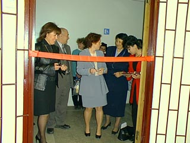
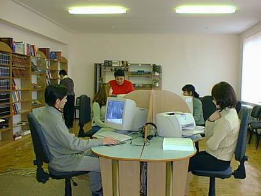

|
|
2 Апрель, 2003 - Открытие Центра
В библиотеке Крымского государственного инженерно-педагогического
университета 2 апреля 2003 года открыт информационно- ресурсный
центр «Окно в Америку». Центр открыт при финансовой поддержке
посольства США в Украине. На церемонии открытия присутствовали
первый заместитель США Мария Йованович, атташе прессы, культуры
и образования Скотт Урбан, представители общественных организаций
города, студенты и преподаватели университета..
|
|  |
Открытие Центра произвела заместитель посла США Мария Йованович.
В своем выступлении она сказала об открытии сети информационно-ресурсных
центров в Украине, о назначении их в получении информации по вопросам
истории, политики, культуре и образованию, в заключении пожелала
успешной и плодотворной работы в Крыму.
|
В ходе программы презентации центра были представлены выставка
фотографий Ричарда Краузе «Украина глазами добровольцев корпуса
Мира» и CD Ильяса Бахшиша «Культура крымских татар», которые
также были выполнены при поддержке посольства США в Украине.
Центр оборудован компьютерами с подключением в Интернет, виде
и аудио аппаратурой и множительной техникой. Коллекция центра
включает в себя собрание прекрасной справочной и энциклопедической
литературы, книги о жизни видных исторических деятелей и писателей
Америки, книги мировой и американской литературы на английском
языке, видео фильмы различной тематики, CD диски, аудио кассеты
для изучения английского языка.
|
 |
|